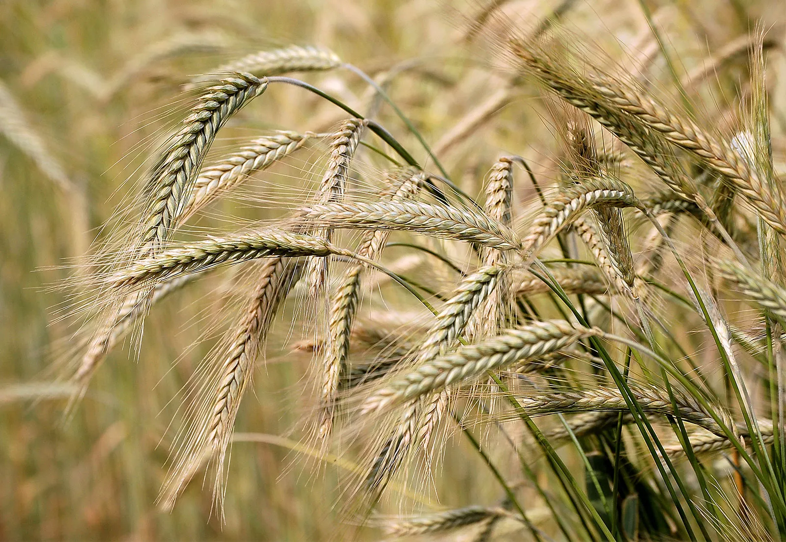
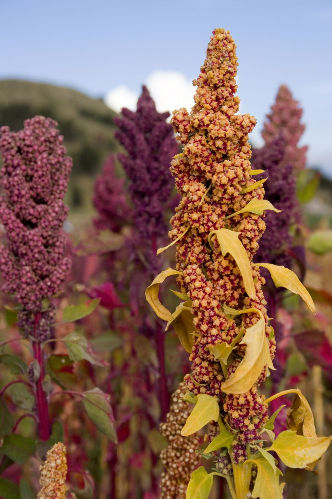
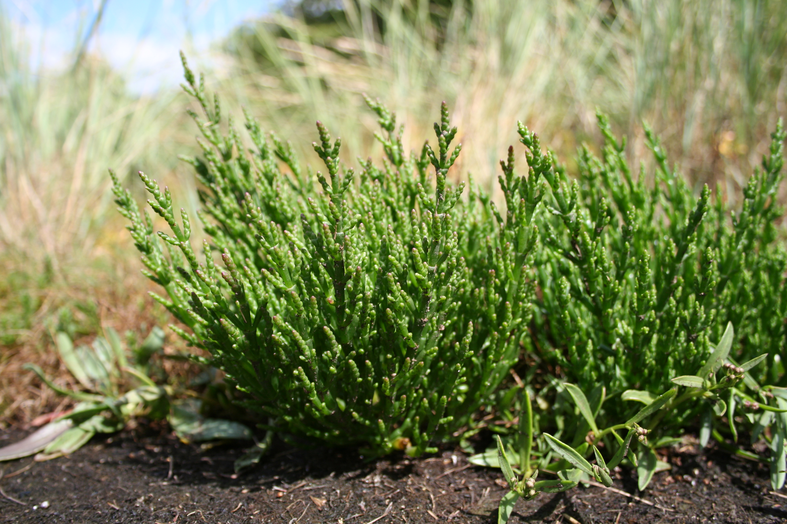
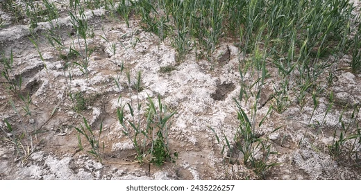
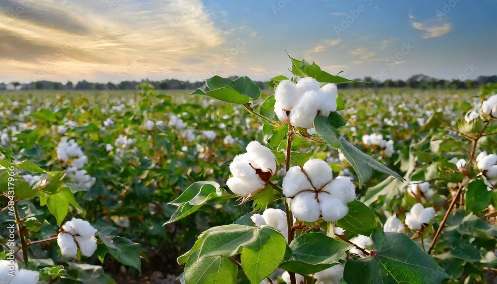

Recommended salt‑tolerant crops (short list)
These crops are commonly recommended for saline soils or salt‑affected sites. Use local extension/advisory before planting — salinity tolerance varies by variety and local conditions.

Barley
Seed rate: 35–40 kg/acre (typical). Maturity: 90–120 days. Climate: cool temperate to semi‑arid; tolerant of moderate salinity — often used as a rotation/cover crop on saline soils.

Quinoa
Seed rate: 2–4 kg/acre (broadcast/varies with variety). Maturity: 90–160 days. Climate: adaptable (cool to temperate); many lines show strong salt tolerance and are used on marginal soils.

Salicornia / Glasswort (halophyte)
Seed rate: small — nursery/transplant systems used. Maturity: perennial/annual types. Climate: coastal saline marshes — true halophyte that thrives in high salinity (specialty crop for forage, oil, or saline‑water irrigation).

Rice (salt‑tolerant varieties)
Seed rate: 20–30 kg/acre (seedling/transplant vs direct sow). Maturity: 100–160 days. Climate: paddy/rainfed coastal areas — specialized salt‑tolerant varieties are grown in reclaimed coastal/sodic fields.

Cotton
Seed rate: variety & planting method dependent — follow seed packet. Climate: semi‑arid to subtropical; some varieties show moderate salinity tolerance. Often used where other crops fail.

Date palm & some fruit trees (pomegranate, olive)
Long‑term perennial options: date palm is relatively salt‑tolerant; olives and pomegranate show moderate tolerance in many regions (best for coastal/brackish groundwater situations).
Note: This is a curated short list — many other forages, halophytes and select varieties work on saline sites. Check local extension recommendations and test soil salinity (EC) before choosing species.
Saline soil basics
Saline soils contain excessive soluble salts (measured as electrical conductivity, EC). Management options include selecting salt‑tolerant crops/varieties, improving drainage and leaching salts (if water quality allows), and using halophytic species for reclamation. For technical guidance see FAO and extension publications.